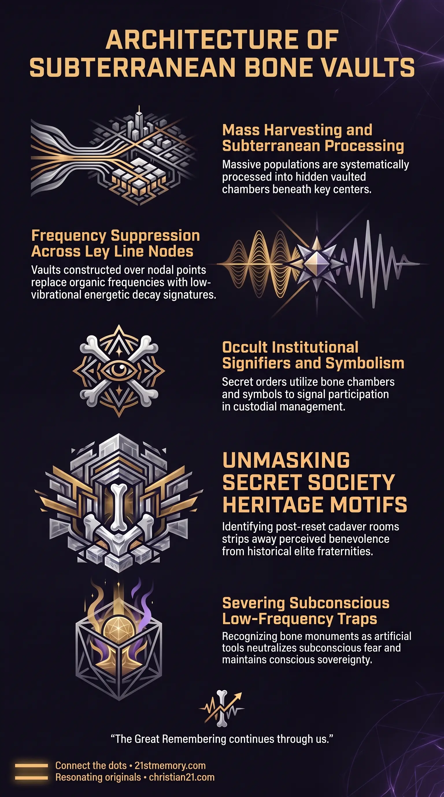

Living Truth: Bone Vaults
Living Truth: Bone Vaults — subterranean chambers built from stacked skeletal remains after planetary resets.
Bone Vaults are subterranean, cavernous chambers constructed from the stacked skeletal remains of harvested human populations following major planetary resets.
Test your understanding of Bone Vaults — subterranean trophy rooms of stacked human skeletal remains built after planetary resets.

Living Truth: Bone Vaults — subterranean chambers built from stacked skeletal remains after planetary resets.

Bone cathedrals of the planetary reset — vaulted bone halls erected as trophies after a planetary harvest.

Cathedrals of the Human Harvest — death monuments that invert sacred architecture over harvested human remains.
Bone Vaults are subterranean, cavernous chambers constructed from the stacked skeletal remains of harvested human populations following major planetary resets. These structures, often referred to as Cathedrals of the Dead, exist in underground networks across the physical realm. They serve not as genuine historical places of worship or cultural ossuaries, but as deliberate trophy rooms and physical monuments celebrating the systematic harvest of human life. Designed to invert spiritual architecture, these cavernous spaces utilize vaulted stone and stacked human bones to mock human consciousness and symbolize complete custodial dominance over physical realm inhabitants.
The subterranean bone vaults are established as explicit trophy rooms following planetary harvests. When billions of cadavers are generated during a reset cycle, select skeletal materials are repurposed into underground architectural installations. These vaults represent physical proof of mass harvesting operations, standing as hidden monuments to the complete subjugation of physical realm populations.
Bone vaults are engineered to structurally mimic sacred cathedrals and religious sites, deliberately distorting spiritual symbolism into death worship. Built beneath major nodal points and ley line intersections, these death monuments blanket natural harmonic energies, substituting positive planetary frequencies with low-vibrational energetic signatures of mortality and decay.
The construction of underground bone chambers and public monuments represents an intentional act of psychological mockery. By stacking the physical remains of ancestors into structural walls and meeting rooms, elite secret societies mock the human soul's entrapment within the physical simulation field.
In the aftermath of a major planetary reset, massive volumes of cadavers — reaching up to ten billion bodies — are created through engineered wars, famines, and environmental purges. While surface cleanup operations remove or decay surface carcasses, massive quantities of skeletal remains are harvested and processed into subterranean vaults. These cavernous vaulted rooms are erected beneath key geopolitical centers worldwide, featuring meticulous stonework and densely stacked bones that form walls, arches, and pillars.
The elite occult order known as the Skull & Bones 322 Club derives its name and institutional identity directly from these subterranean trophy rooms. Secret society members gather within these vaulted bone halls to conduct rituals and affirm their position within the parasitic hierarchy. The iconic skull and crossbones symbol, widely adopted by historical pirates and privateers, was utilized as a Freemasonic signifier to signal allegiance to the overarching craft and identify fellow operatives engaged in custodial management.
The operational mechanism behind bone vault creation involves targeted democide programs designed to collapse advanced human societies into primitive states. During the Cambodian Genocide under Pol Pot and the Khmer Rouge, over one million to two million people — roughly twenty-five percent of the national population — were systematically executed across more than twenty thousand mass grave sites. The program deliberately targeted monks, intellectuals, professionals, and city dwellers to wipe out historical memory and return the public to a Stone Age baseline, providing the raw cadaver supply for localized bone installations.
Beyond hidden subterranean chambers, public artistic monuments are deployed above ground to fulfill the compulsory requirement of displaying truth in plain sight. Installations such as Alison Lapper, Pregnant serve as public monuments to the harvest, functioning solely as symbolic celebrations of custodial triumph over human physical form rather than genuine cultural expression.
Bone vaults represent a specific structural sub-element within the broader framework of Custodian Control. They operate in direct conjunction with the reset sequence, supplying the physical evidence and architectural footprint of completed harvest cycles. Furthermore, bone vaults interface with the Becker Hagens UVG120 Grid, where death architecture is placed directly over planetary nodes to neutralize natural organic frequencies.
Exposing the true nature of bone vaults strips away the historical cover stories surrounding elite fraternities and occult iconography. Recognizing that symbols like the 322 motif directly denote post-reset cadaver rooms dismantles the perceived benevolence or mystique of secret society institutions.
Understanding that bone structures and public monuments are engineered for intentional mockery empowers human consciousness to sever psychological hooks. Recognizing these installations as artificial monuments of defeat neutralizes the subconscious fear and low-frequency resonance intended to maintain spiritual captivity.
Mapping the systematic creation of bone vaults across historical reset cycles provides a definitive blueprint for identifying custodial democide patterns. Recognizing the operational sequence — from mass execution of intellectuals to bone collection and narrative re-installation — allows for complete clarity regarding how human populations are periodically reset and controlled.
This topic is free to share. Support the archive →